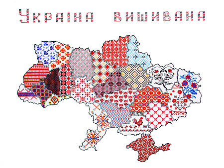
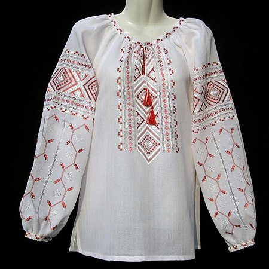
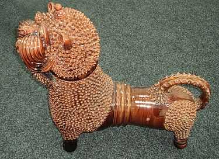

Наро́дні си́мволи Украї́ни скарб українського народу. В українській графіці використовуються символи й образи з пісенної народної творчості, з легенд, що використовуються в обрядах і звичаях. Їх вишивають на сорочках, рушниках тощо. За втіленням символіки умовно поділяються на рослинні і тваринні.
Українці відтворюють ці символи у вишивці на сорочках, рушниках тощо, у розписі посуду, в кованих виробах, у різьбленні, в барельєфному прикрашанні житла, у розписах печі в хатах, гончарних виробах, у гравюрі, а також, в окремому виді української творчості — в писанках.
Українська народна символіка поєднує язичницькі та християнські елементи, що витворюють синтез, виражений у національному світосприйнятті, звичаях, традиції, декоративному мистецтві, фольклорі
У іконах (на дереві, склі), українські, руські майстри, прикрашали ікону стилізованими симетричними квіточками, суцвіттями й «яблучками», розташованими у горішній її частині. Серед мотивів декору українських ікон використовувалися такі стилізовані квіти, як гвоздика, тюльпан, троянда, лотос, гранат, крин-лілія, акант та виноградна лоза.
Давні предки українців обожнювали природу і вірили в існування добрих і злих сил у ній. Намагаючись захиститися від зла, люди створили для себе цілу систему оберегів. Берегиня, обереги — це давні добрі символи. З їхньою допомогою народ зберіг свою родовідну пам'ять, історію, культуру. За давніми уявленнями предків українців, світ складався з трьох частин: небесна частина з божествами, що жили на ній, а також світилами — сонцем, місяцем зорями; земна — з людиною і землею, на якій вона жила; підземна — із духами зла, смертю, душами померлих родичів. За цими ж принципами людина збудувала своє житло. Дах — небесна частина, середня частина — власне житло і нижня, яка містилася в землі. Вікна — це очі хати, через які людина підтримувала зв'язок з божеством, а поріг — це межа між людським світом і світом померлих.
Для прабабусь і бабусь українців, хрест, молитва, великодня крашанка, як і рушник, паляниця, вогонь у печі, обручка, пучечок певного зілля, пов'язаного навхрест, а також слова «добрий день!», «з Богом!», «бувайте здорові!», були не просто предметами і словами, а знаками добра і сили, заступниками від нещасть, були — оберегами.
Найдавніший зразок оберега — жіноче божество, яке було поширеним практично у всіх народів. З ним пов'язана і етимологія слова «оберег». Походить воно від слова «берегиня», що рівнозначне грецькому «земля» (давньоруська транскрипція — «берние», тобто земля, глина), богиня землі, її берегуша, охоронниця. Берегиня — мати всього живого, первісне божество-захисник людини, богиня родючості, природи та добра. З часом Берегиня стала охоронницею дому, її скульптурки знаходились у хатах, зображення-амулети носили на шиї. Образ Берегині дійшов до сьогодні у вишивці: на обрядових рушниках, у жіночому одязі є стилізована жіноча постать, найчастіше — з піднятими руками (знак захисту), іноді з прибогами — конями по обидва боки. Нерідко Берегиню підміняла ідеограма — ромб з гачками — землеробський символ родючості, магічний оберігальний знак. З часу прийняття християнства символічний смисл Берегині (Венери, Рожаниці) було перекладено на образ Богородиці. В ньому людина вшановувала саму природу, життя, подвиг материнства. У свідомості людей Давньої Русі Богородиця сприймалась як всемогутня заступниця людства перед Богом. Ікони із зображенням Богоматері брали з собою в похід, ними благословляли воїнів, що йшли на смертний бій із загарбниками. Такі ікони часто вважаються покровительками міст.
Серед речей-оберегів — рушників та ікон — переважав рослинний декор.
У «Словнику символів культури України» подана така класифікація символів:
Докладніше: українська вишивка
Вишиванка -символ здоров'я, краси, щасливої долі, родової пам'яті, порядності, чесності, любові, святковості; оберіг. Вишита національна жіноча та чоловіча біла сорочка. Символіка вишивки залежала від того, кому призначалося вбрання: парубкові — нареченому, чоловікові, хлопцеві; дівчині, заміжній жінці.
Виготовлялися з лляного чи конопляного полотна домашньої роботи. Було чимало типів традиційних сорочок за формою, використанням матеріалів, а також за семантикою кольорів: подільський, галицький, поліський, волинський, наддніпрянський, полтавський, гуцульський, буковинський, лемківський тощо. Цікаво, що символіка вишиванок часто-густо збігається із символікою орнаментів предметів матеріальної трипільської культури. Виявлені на Черкащині срібні бляшки з фігурками чоловіків (датують їх VI ст.) ідентифікуються з візерунками вишиванок XVIII—XX ст.. Щоправда, символіка вишивки часто-густо складалася з двох частин: історичної (родової) і прогнозуючої (загадування майбутнього, продовження роду).
На вишиванках застосовувалися традиційні символічні орнаменти: геометричні (вважаються найдавнішими), рослинні, зооморфні (тваринні). Іноді типи орнаментальних форм поєднувалися: орнаментально-рослинний з переважанням першого чи останнього.
Символіку форм конкретизувала символіка барв. Скажімо, подільська кольорова мережка, виконана хрестиком і низзю з декоративним швом-качалкою (качалочкою) подає ромб, розміщений поміж двома горизонтальними лініями. Трикутник між ромбом та лініями вишивався навскісними лініями у вигляді завитків («баранячі роги»). В орнаментах переважає чорний і червоний кольори із украпленням синього, зеленого, жовтого (золотого). Такий тип вишивки міг символізувати не лише хліборобську працю на чорноземі в зоні лісостепу з наявністю річок, озер чи журливість вдачі, любов, цілеспрямованість подолянина у досягненні мети, а й певну гармонійність у стосунках людини з природою і людських взаєминах; силу, міць; зростання; часом — запліднення тощо (слід розглядати конкретний зразок призначення вишивки). Із зображеннями ромба й двох ліній могли пов'язуватися певні уявлення про календар, чотири пори року, між народженням та смертю (дві лінії).
Народ ставився до вишиванок як до святині. Вишиванки передавалися з покоління в покоління, з роду в рід, береглися як реліквії. Символічний образ сорочки-вишиванки часто зустрічається в народних піснях про кохання, сімейне життя, а також соціально-побутових (козацьких, чумацьких, бурлацьких, наймитських та ін.). За традицією, дівчина, готуючи посаг, мала вишити своєму нареченому сорочку: Шовком шила, шовком шила, золотом рубила. Та для того козаченька, що вірно любила.
Сорочка (особливо чоловіча) була символом кохання і вірності. В давньому замовлянні сказано: «Якою білою є сорочка на тілі, таким щоб і чоловік до жінки був», звідки видно, що «білий — милий». У деяких народних піснях, як зауважував О.Потебня, образ не пояснюється, але його можна зрозуміти на основі символічних значень: Ой коби я була знала, що я твоя буду, Випрала би-м сорочечку від чорного бруду (тобто: покохала б, поєдналася з тобою за умови обов'язкового майбутнього заміжжя); Заковала зозуленька на жовтім пісочку. А хто ж мому миленькому випере сорочку?
У другій половині XIX ст. в європейській фольклористиці широко обговорювався сюжет про графа, котрий потрапив у полон до невірних, і про його дружину. Біла сорочка, що її дала дружина чоловікові, — символ вірності: поки сорочка біла, доти жінка вірна. Випрати сорочку в чумацьких піснях означає полюбити чумака, навіть якщо він одружений. Характерно, що не завжди чумак погоджується на любовні стосунки з випадковими особами жіночої статі (в піснях це переважно дівчата або молода шинкарка-здирниця), не дозволяє якій-небудь «прати сорочку», хоч вона й не біла, бо «сьома неділя». Таким чином, чумак зберігає вірність коханій дівчині, до якої має повернутися.
Сорочка-вишиванка оспівана, зображена в різноманітних жанрах народної творчості (в тім числі — жартівливих, пародійних), сучасними поетами. Вона є символом українця загалом і України зокрема, проте в XX ст. престиж вишиванки як одягу занепав під згубними впливами шовіністично-космополітичних, комуно-фашистських, екстремістських та інших тенденцій. М.Дмитренко
Сорочка-вишиванка оспівана, зображена в різноманітних жанрах народної творчості (в тім числі — жартівливих, пародійних), сучасними поетами.
Вінок - символ життя, долі, життєвої сили; символ дівоцтва. Вінок є також символом довершеності.
Смуга полотна сама по собі має насичене символічне значення — дороги, долі, захисту. А коли ця смуга ще й має на собі виткані чи вишиті знаки-обереги — захисна сила її, відповідно, посилюється. У всій Україні рушником накривали хліб на столі. Коли син вирушав у далеку дорогу, мати дарувала йому рушник. Хлібом-сіллю на рушнику і досі зустрічають гостей. В українській хаті рушники вивішують над іконами і над портретами родичів (див. ще коровай). Рушник використовується в багатьох обрядах, насамперед тих, що пов'язані зі шлюбом і проводами в потойбіччя.
До рослинних символів відносяться калина, верба, дуб, тополя, барвінок, чорнобривці. Вони здавна уособлюють красу нашої України, духовну міць народу, засвідчують любов до рідної землі.
Вони здавна уособлюють красу нашої України, духовну міць народу, засвідчують любов до рідної землі. Рослинні мотиви протягом століть трансформувалися у різні фантазійні сплетіння, доповнені завитками, листям, стеблами. Окремі рослинні мотиви, як виноград, троянда, вважається, перейшли в ужиток з міського чи монастирського середовища.
Одним з найпоширеніших орнаментів було “Світове дерево”. Це образ прародительки – Матері-Землі. Вигнута гілочка означає мінливість, динамічність, розвиток… Родове дерево – це винятково чоловічий знак. Він уособлює надійність, стійкість та силу. Гвоздики вишивали на сорочках літніх людей. Тюльпани – це символ юнаків, а троянди – молодих дівчат.
Цю рослину назвали так на честь кохання юнака Бара і дівчини Вінки. Барвінком прикрашають весільний коровай, його садять біля хати. Барвінок вплітають дівчата у віночок. Він зеленіє навіть під снігом. Барвінок є символом кохання.
Докладніше: Верба_(українська_міфологія)
Близько 30 видів росте в Україні. Кажуть: «Де вода, там і верба». Вона своїми коренями скріплює береги, очищає воду. Коли копали криницю, то кидали шматок вербової колоди для очищення води. У відро з водою клали вербову дощечку, а на неї ставили кухлик для пиття води. Це була своєрідна народна гігієна. Про тиху, скромну вербу народ склав багато пісень. У багатьох творах згадує вербу і Т. Шевченко. Перебуваючи у засланні у пустелі біля Каспійського моря, Шевченко посадив вербову гілку. Він поливав, доглядав її і виросла вона йому на Втіху. Росте верба Шевченкова і досі. У нашій вербі живе і добра душа Левиної Мавки. Похилені вербові гілки викликають зажуру і смуток.
Тиждень перед Великоднем називається вербним (вербна неділя). Тоді освячують вербу. У багатьох селах України садили гілочку свяченої верби. Вважалося, що така верба є особливо цілющою
Вишня — символ світового дерева, життя; символ України, рідної землі; матері; дівчини-нареченої. У давнину вишня була одним із священних дерев далекої Японії та Китаю. Для праукраїнців вишня, за даними О. Шокала, — світове дерево життя. Як відомо, колись слов'яни святкували Новий рік 21 березня. Це було свято весни, Новий рік споконвічних хліборобів. «У давнину в Україні, — підкреслює дослідник, — вишня була ритуальним деревом весняного новорічного обряду. Деревце вишні садили восени в діжечку, тримали його в хаті, а навесні, у березні, вишенька розвивалась і розквітала. По тому, як вона квітне, дівчата вгадували долю на цілий Новий рік». На думку Г. Лозко, назву «вишня» слід вважати прикметником жіночого роду, від форми «вишній», тобто «божественний» (пор. із словом «Все-вишній» Всевишній). Отже, вишня — це «божественне дерево», присвячене Сварогу.
Окремі дослідники зіставляють це слово із весняним сонцем у зеніті, тобто «вишнім» сонцем. Лінгвістичний аналіз етимології слова «вишня», зроблений нами, підтверджує думку про правильність зіставлення її з образом світового дерева, священного дерева життя. По-перше, слово «вишня» — слов'янського походження, воно мало такі регіональні варіанти як «вишник», «вишника». Водночас слово «вись» (висота) (світове дерево, як відомо, дуже високе, дістає кроною неба) мало аналогічні форми — «вишник», тобто «вищий», «старший», «вишок» — вершина, шпиль.
Словник Б.Грінченка фіксує форму «вишній», тобто «верховний», а отже «небесний», «божественний». Водночас у Словнику вміщено фразу «Господи вишній, чи я в тебе лишній?», яку можна зіставити із фольклорним виразом «Ненько, моя вишня, Чи я в тебе лишня…» Отже, у свідомості праукраїнців вишня асоціювалася із небом, високим деревом життя, Богом. Окрім того, білий колір її цвіту асоціювався із святістю, бо «світ» — це «свят».
За даними М. Костомарова, слов'яни обожнювали саме світло як джерело життя, білий колір (пор. імена язичницьких богів Світовид, Білобог). Споконвіку священні речі українців — білі (хата, вишиванка, хустина, рушник). Священний птах лелека має біле забарвлення. Таким чином, безсумнівно, вишня була у наших пращурів Священним Деревом Життя, Матері-богині, України. Відгомін цих вірувань знаходимо у творах усної народної творчості, українських письменників. У свідомості українців і нині вишня — це рідна домівка: «Садок вишневий коло хати» (Т. Г. Шевченко). Або: «Як я любив у хмарах вишняку Твої білесенькі, немов хустини, хати» (М.Старицький).
Калина— символ життя, крові, вогню. Деякі дослідники пов'язують її назву із сонцем, жаром, паланням. Калина часто відіграє роль світового дерева, на вершечку якого птахи їдять ягоди і приносять людям вісті, іноді з потойбіччя. Та й саме дерево пов'язує світ мертвих зі світом живих.
З гілочки калини батько синові робив сопілочку, а слабеньким дівчаткам-немовляткам робили колисочку із калини. Калину оспівують у піснях, про неї складено легенди. В одній із них розповідається про те, як вродлива дівчина Калина завела у болото ворогів-бусурманів. Багато з них загинули, але загинула і молода красуня. На місці її загибелі виріс кущ, який на честь дівчини і назвали калиною.
Калиною прикрашали весільний коровай. Перед молодими на столі ставили букет із гілочок дуба та калини. І на весільному рушнику вишивали калину з дубом як символи дівочої краси і ніжності та чоловічої сили і міцності.
Калина символізує материнство: кущ — сама мати; цвіт, ягідки — діти. Це також уособлення дому, батьків, усього рідного. Калина — український символ позачасового єднання народу: живих з тими, що відійшли в потойбіччя і тими, котрі ще чекають на своє народження. Калина уособлює й саму Україну. Як символ Батьківщини, вона «проросла» в гімнові січових стрільців: Ой у лузі червона калина похилилася, Чогось наша славна Україна зажурилася, А ми тую червону калину підіймемо. А ми нашу славну Україну розвеселимо!
Тваринних символів в українській семантиці багато. Тваринні образи, на думку Надії Пастух, мають універсальне значення в символічній системі українського фольклору. І. Вагилевич у праці «Слов'янська символіка» поділяє усіх «земних» реалій світу на бездіяльні (породи), напівдіяльні (рослини) та діяльні (тварини) накреслює шляхи розв'язання проблеми. Виявляється, що сила людського інтересу до певного природного класу залежить від життєвої енергії його елементів. За класифікацією Н. Пастух, є звірі, гади (з підгрупою комахи), птахи і риби. Важливим є те, що даний поділ відтворює народну класифікацію тварин, яка має багато розбіжностей з науковою. Такі розходження виявив О.Гура: народна класифікація різниться 1)меншою кількістю класів та іншим їхнім складом; 2)рухомістю, нежорсткістю класифікаційних рамок; 3)змішуванням різних видів тварин; 4)зміною, перетворенням одних видів у інші; 5)наявністю фантастичних видів тварин. У вишивках зооморфних (тваринних) орнаментів зображуються: кінь, заєць, риба, жаба; з птахів — півень, сова, голуб, зозуля; з комах — муха, метелик, павук, летючі жуки. В багатьох випадках зооморфні орнаменти є своєрідним, властивим тільки вишивальниці, зображенням, в якому відбивається її індивідуальне бачення узору. У подібних орнаментах виступають у різноманітних часто химерних сплетеннях (однак зі збереженням традиційних вимог до композиції) заячі та вовчі зуби, волове око, коропова луска, баранячі роги тощо. На Наддніпрянщині елементи тваринного світу, часто дуже стилізовані, зберегли свій початковий зміст у назвах орнаменту: метелики, рачки, павуки, собаки, півники. На Київщині й Полтавщині траплялися стилізовані зображення качок, павичів, джмелів.
Такі орнаменти мають давні тотемічні коріння; низка дослідників — О. Знойко, В. Давидюк, Г. Лозко, М.-Л. А. Чепа — вважає, що коза і вовк є тотемними тваринами племен, з яких сформувався український народ. При цьому коза як тотем притаманна для переважної частини України від Київщини й Чернігівщини до Гуцульщини в Карпатських горах, а ознаки вовка як тотема поширені на волинському Поліссі й частково чернігівському Поліссі.
У тих регіонах України, де вовк є тотемом, під час новорічних народних вистав свята Щедрого вечора щедрувальники вдягалися не лише в шкіру кози, але й у шкіру вовка. Етнографами записано на Чернігівщині пісню при щедровечірньому водінні кози, де згадується також і вовк.
В опішнянській зооморфній пластиці, як описує кандидат мистецтвознавства Олена Клименко, другої половини ХХ століття були збережені давні образи народної скульптури — баран, бик, лев, цап/козел; кінь, їжак. На відміну від іграшки, зображення птаха зустрічається дуже рідко. Майже не змінився старий композиційний принцип: тварина стоїть на чотирьох ніжках, голова розташовується прямо, або злегка відведена вбік, паща відкрита. Між рогами (баран, бик, цап) або вухами (лев) розташований отвір з маленькою покришкою. Збереглися і деякі принципи декорування: імітація вовни у вигляді ліплення з пропущеної крізь сито або тканину глини, гравірування, ум'ятини, відтиски штампа.
Птаство — елемент, що пов'язує тутешній світ з потойбічним, переносник душ. Душі померлих містяться у раю. І повертаються вони восени в рай. Очевидно з цих двох слів утворилося «Вирій». А ключі від Вирію Бог доручив зозулі, — говориться в легенді. Відкриває зозуля ключами вирій, випускає птахів по черзі на землю. А іще Бог доручив зозулі кувати довгі роки життя людям. І у вирій вона повинна відлетіти раніше, щоб відкрити його для інших птахів. Тому не встигає вона висидіти пташенят і підкидає яйця в чужі гніздечка. Та хай там як, про зозулю в Україні ніхто ніколи не говорив погано. У народних піснях її порівнювали з матір'ю, яка побивається за своїми дітьми, називали лагідно «зозуленькою-матінкою».
Улюбленим птахом є лелека. Його назвали на честь божества добра і кохання — Леля. Ну, а як відомо — від кохання народжуються діти. От і приносить їх у наші домівки лелека. Говорили колись, що Лель живе у душі доброї людини, а лелека мостить гніздо на подвір'ї добрих людей.
Символом туги за рідним краєм є журавель. Це щемливе відчуття, яке чути у курликанні журавлів, відчуває людина, коли вона далеко від Батьківщини.
Символом матері є ластівка. Народознавець Г. Маковей пише, що на Петра і Павла вшановували найстарішого члена роду. Родина дарувала йому дубовий вінок як символ довголіття. А на другу Пречисту вітали матір. До християнства 22 вересня святкували свято Рожаниці — покровительки матері — породіллі. Цього дня діти ліпили з глини ластівку і дарували матері. Мати зберігала її протягом року до наступного свята. Якщо мама помирала, то діти клали ластівочку їй у домовину, а на воротях ставили перевернуті граблі зверху прикріпляли ластівку. Так вони стояли 40 днів і всі, хто йшов мимо двору знали, що померла та, на якій трималася вся родина. З ластівкою пов'язано багато прикмет, повір'їв.
Писанка — символ Сонця; життя, його безсмертя; любові і краси; весняного відродження; добра, щастя, радості. Кожен орнаментальний мотив має певне сакральне значення. З них на писанці складається мальована молитва про злагоду і мир поміж людьми. У християнській культурі українців писанка стала символом воскресіння. В народі кажуть: «У світі доти існуватиме любов, доки люди писатимуть писанки».
Волосся — символ богині неба, землі; багатства; розвитку духовних сил; енергії, вогню, плодючості, здоров'я; символ скорботи, трауру; обстрижене волосся — символ покритки (стриги), втраченого дівоцтва, цнотливості; «народження-смерті»; вічної пам'яті; оберіг. Волосся — багатозначний символ. Волосся на голові символізувало духовні сили людини, і водночас — ірраціональні космічні сили та біологічні інстинкти.